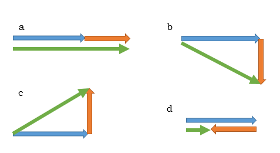
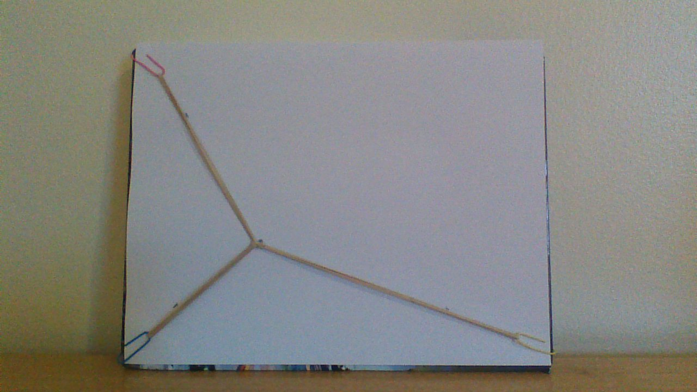
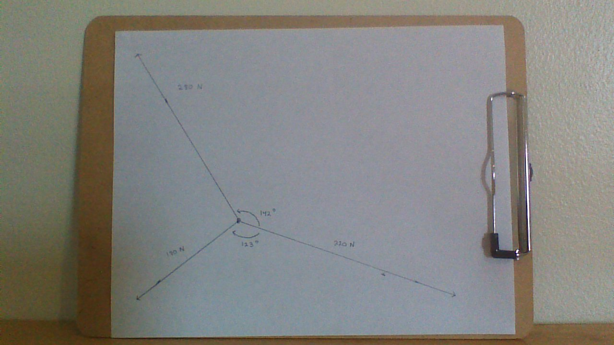
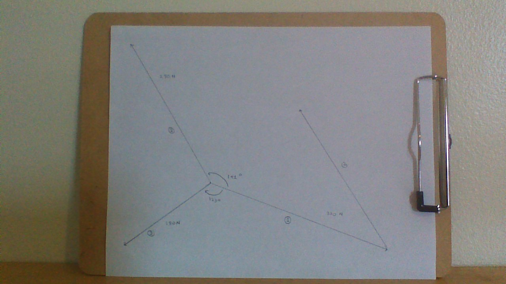
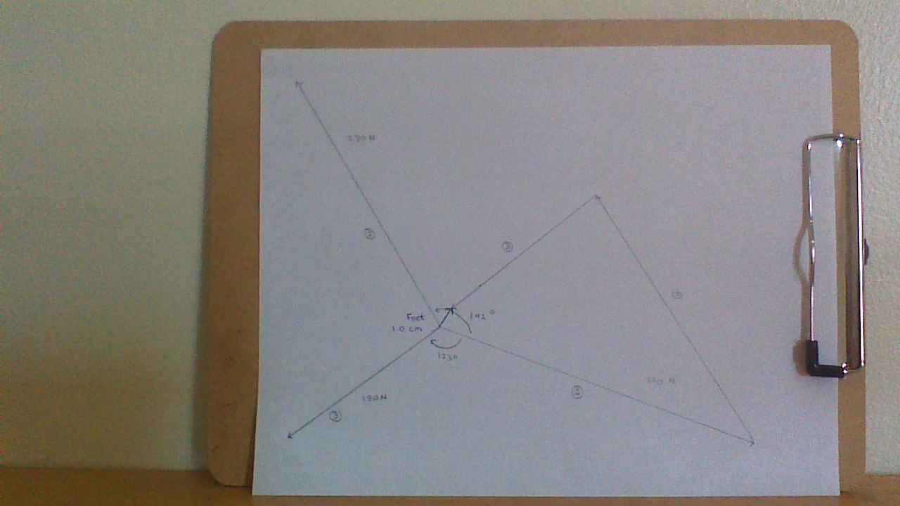
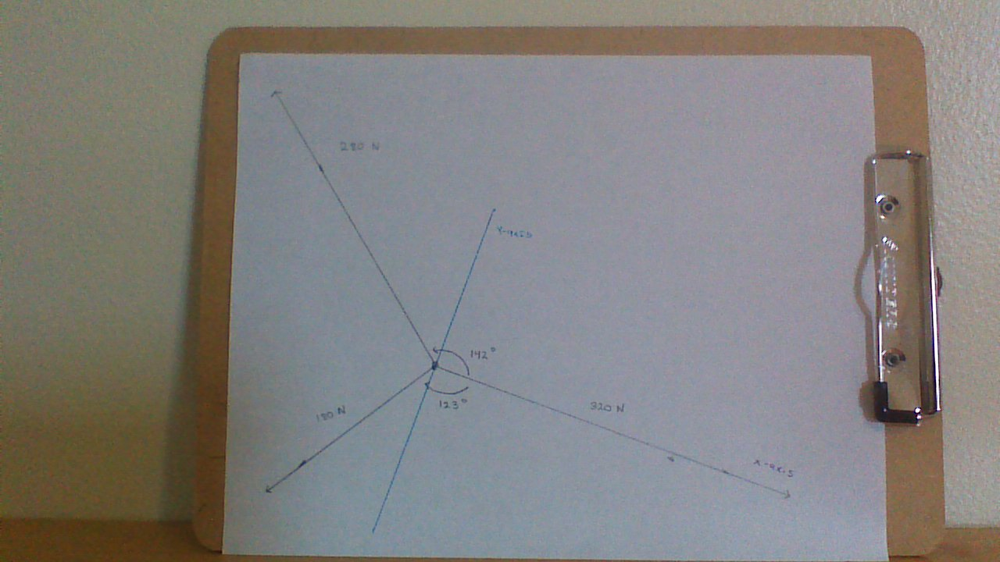

Many of the quantities measured in physics are vectors, which possess both a magnitude and a direction. Vectors generally can't be treated mathematically like scalars, which have a magnitude only. The rules of arithmetic and algebra only apply if two vectors are acting along the same direction.
For example, in the figure below an orange vector with a magnitude of 3 units is added to a blue vector with a magnitude of 4 units. The blue vector always points in the +X direction, but the direction of the orange vector is unspecified and can point at any angle, from 0 to 360 degrees.
If the orange vector also points in the +X direction, then the vector sum shown in green will have a magnitude of +4 + 3 = +7 units, as shown in (a). However, if the orange vector points in the negative X direction, then the vector sum is +4 + (-3) = +1 unit in length, as shown in (d).
Although there are an infinite number of possible angles for the direction of the orange vector, examples (b) and (c) are two important special cases. In example (b), the orange vector points in the +Y direction and in example (c), it points in the -Y direction. The result is a right triangle with the blue and orange vectors acting as the legs and the vector sum as the hypotenuse. For these two cases, it is a simple matter to use the principles of trigonometry to determine a vector magnitude of 5 units and angles of -37 (for b) and +37 degrees (for c) with respect to the x-axis.

The general method for adding vectors is built on these four examples. The magnitude and direction of each vector is measured in a specified coordinate system. Vector components are calculated using trigonometry, and then added separately in the x- and y-directions. These two components are then re-constituted using trigonometry to find the magnitude and direction of the vector sum.
In this experiment, we will determine the sum of three vectors both algebraically and graphically. The system consists of three connected and stretched rubber bands. According to the principles of dynamics studied later in the course, the sum of the three force vectors should be zero. Because this is a real system, we are not expecting the result to be perfectly zero, but the magnitude of the net force vector should be approximately the same for both methods of addition since they are mathematically equivalent.
Tie the loops of three rubber bands together with a piece of thread or a twist tie and attach a paper clip to each loop. Place a piece of white paper on top of a book that has dimensions of at least those of a standard piece of paper.
Figure 1: A three-rubber band system and copy paper.
Hook the paper clips on the edges of the book's cover at approximately three of the corners. Use a pencil to mark the center of the three-rubber-band system. Make marks on the paper along each vector so that the direction of the force can be determined later.

Figure 2: The rubber band system attached to the paper.
Attach a spring scale to one of the paper clips, leaving the other two in place. Hold the spring scale so that the position of the paper clip is approximately in the same direction as when it was attached to the cover and record the force from the spring scale to the closest tenth of a Newton on the paper and in the data table.
Repeat this process for the other two rubber bands and clips. After completing these steps, the rubber bands and paper may be removed from the book.
Figure 3: Pulling on a rubber band with a spring scale. The spring scale reads 2.8 N.
Use the measured force magnitudes to create a scale factor that will convert a force in Newtons to a length in centimeters. The scale should insure that the longest vector (the greatest magnitude) will fit onto the piece of paper. Scale factors such as 1 cm = 0.2 N or 1 cm = 0.5 N are common for this experiment.
Use the scale factor and the siting marks for each rubber band to draw in the three vectors to scale. Label the vectors as 1, 2, and 3.

Figure 4: Vector 1, pointing to the right, is 3.20 Newtons and 16.0 cm long (1.0 N = 0.20 cm). Vector 2 at the upper left is 2.80 N at a 142o angle with respect to Vector 1 and 14.0 cm in length. Vector 3, lower left, is 1.80 N (9.0 cm) at -123o with respect to Vector 1.
Re-create the raw data on the first page of the Report Sheet. Add Vector 2 to Vector 1 by 'moving' the tail of Vector 2 to the arrow tip of Vector 1. Do this by reproducing the angle between the two vectors at the tip of Vector 1, then drawing in a new vector the same length as Vector 2 and pointing in the same direction. Vector 2 and the new vector will be parallel to each other and the same length, and therefore equivalent to each other.

Figure 5: A protractor was used to mark a 142o angle with respect to the right side of Vector 1 (38o with respect to the left side, the actual line), and a ruler was used to draw a vector 18.0 cm long starting at the tip of Vector 1. The new vector added to Vector 1 is equivalent to Vector 2.
Next, add Vector 3 to Vector 2. To find the sum of the three vectors, draw a net vector from the tail of Vector 1 to the tip of Vector 3. Measure the length of the net vector in centimeters and use the scale factor to convert the magnitude to Newtons. Report the magnitude of the vector sum on the Report Sheet.

Figure 6: Vector 3 is added to the 'moved' Vector 2 using the same approach. The net force vector is drawn in violet ink from the original tail of Vector 1 to the tip of the 'moved' Vector 3. The length of the net force vector is 1.0 cm = 0.20 N.
Re-create the raw data on the second page of the Report Sheet. Let Vector 1 lie along a positive x-axis. Use a protractor to draw in the Y-axis through the center of the three-vector system. Use a protractor to measure the angles between Vectors 1 and 2 and between Vectors 1 and 3.

Figure 7: Vector 1 lies along the x-axis and the y-axis has been added (in blue).
Use the trigonometric definitions of sine and cosine to find the x- and y-components of all three vectors, including positive and negative signs for each, and record the values in the data table.
Add the three x-components and the three y-components separately and record the results in the data table. Use the Pythagorean theorem to calculate the magnitude of the net vector.

Figure 8: Using the definitions Fx = F cosθ and Fy = F sinθ, the x- and y-components of Vector 1 are 3.20 N and 0.0 N, respectively; -2.20 and 1.72 N respectively for Vector 2; and -0.98 N and -1.51 N respectively for Vector 3. The sum of the three x-components is 0.02 N and 0.21 N for the y-components. Using the Pythagorean theorem, the net force magnitude is 0.21 N, which is very close to the 0.20 N magnitude found using the graphical method.
Compare and comment on the net vector magnitudes derived from both methods of vector addition.
Submit the finished Report Sheet to the Lesson 2 Lab: Vector Addition assignment folder. It should include two separate drawings of the three vectors acting on a single point, a completed data table, sample calculations, and a conclusion written in one or more complete sentences.
Note: your lab report sheet should be completed by hand. You will need to scan and upload the completed document to the assignment folder.